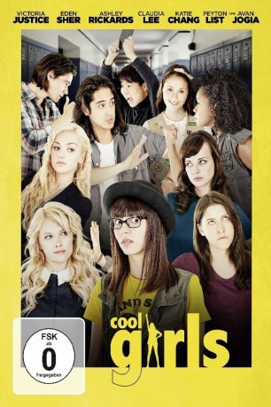

#8726 Cool Girls
Alternativ: The Outcasts
 
 IMDB-Wertung: 5.5 / 10
IMDB-Wertung: 5.5 / 10  Metascore: 47
Metascore: 47 
Nachdem sie jahrelang üblen Streichen der Schuldiva und ihrer Clique zum Opfer gefallen sind, haben Jodi (Victoria Justice) und ihre beste Freundin Mindy (Eden Sher) genug von den Demütigungen und schwören ihren ach so beliebten Mitschülerinnen erbitterte Rache. Hierfür vereinen sie alle Außenseiter der Schule und zetteln eine Revolution an, welche dem harschen Regime von Bee und ihren Freunden endgültig ein Ende setzten soll. Teil der Außenseiter-Clique sind der liebenswerte Nichtstuer Dave (Avan Jogia), die Pfadfinderin Claire (Katie Chang), die ein Geheimnis verbirgt, und die Überfliegerin Virginia (Ashley Rickards), die über alles und jeden Bescheid weiß. Das neu gewonnene Ansehen steigt der Außenseiter-Clique allerdings allmählich zu Kopf und es kommt zunehmend zu Spannungen zwischen ihnen, was sie beinahe ihre Freundschaft kostet.
Jahr: 2017
Dauer: 90 Minuten
FSK: 0
Land: USA Studio: Swen GroupTonspuren: DD5.1 - ,
Untertitel:
Auflösung: 1080p (1920x1040) Größe: 6799 MB
Genre: Komödie
Regisseur: Krzysztof Lukaszewicz
Drehbuch: Randy Moore
Soundtrack: Spencer David Hutchings
Darsteller:
 Victoria Justice als Jodi
Victoria Justice als Jodi- Eden Sher als Mindy
- Ashley Rickards als Virginia
 Avan Jogia als Dave
Avan Jogia als Dave- Claudia Lee als Whitney
- Katie Chang als Claire
 Peyton List als Mackenzie
Peyton List als Mackenzie Will Peltz als Colin
Will Peltz als Colin Daniel Eric Gold als Mr. Samuels
Daniel Eric Gold als Mr. Samuels Ted McGinley als Principal Whitmore
Ted McGinley als Principal Whitmore Frank Whaley als Herb
Frank Whaley als Herb- Harry Katzman als Louis
- Noah Robbins als Martin
- Alex Shimizu als Howard
- Nick Bailey als Rick
- Jeanette Dilone als Paloma
- David W. Thompson als Debate Nerd
 Ashlie Atkinson als Interviewer
Ashlie Atkinson als Interviewer- Anthony Atamanuik als Photographer
- Sameerah Luqmaan-Harris als Sugar's Mom
- Lauren Schaffel als Drama Girl
- Ashlyn Alessi als Prom Dancer (uncredited)
- Amanda Bear als Party Goer (uncredited)
 Lorenzo Beronilla als Cafeteria worker (uncredited)
Lorenzo Beronilla als Cafeteria worker (uncredited) Jasmine Hope Bloch als Marching Band Member (uncredited)
Jasmine Hope Bloch als Marching Band Member (uncredited)- Gregory M. Brown als Teacher (uncredited)
- Stephanie Damiano als Popular Girl (uncredited)
- Brinda Dixit als Dancing Prom Girl (uncredited)
- Pierson Fode als Cameo (uncredited)
- Jillian Hite als Prom Guest (uncredited)
- Shana Kaplan als Prom / Party Goer (uncredited)
- Rachel Moss als Miniature Girl (uncredited)
 Inna Muratova als Steampunk Girl (uncredited)
Inna Muratova als Steampunk Girl (uncredited) Wayne Pyle als Officer Musky (uncredited)
Wayne Pyle als Officer Musky (uncredited) Harry L. Seddon als Lacrosse Referee (uncredited)
Harry L. Seddon als Lacrosse Referee (uncredited) Bettina Skye als Lunch lady (uncredited)
Bettina Skye als Lunch lady (uncredited)- Nora Sommerkamp als Popular Girl / Partygoer (uncredited)
- Azumi Tsutsui als Student (uncredited)
- Rebecca Werner als Prom / Party Goer (uncredited)
- Shara Ashley Zeiger als Marching Band Flute Player (uncredited)
- Jazmyn Richardson als Sugar
- Brock Yurich als Kyle McDevitt
- Christopher Hardwick als Minuteman Statue
- Shannon Formas als Prom Goer (uncredited)
- Joe Kassner als Whitney's father (uncredited)
- Faith Kelly als Gothic School Politic (uncredited)
- Anna Kuchma als Fantasy Student (uncredited)
- Taylor Ligay als Student (uncredited)
- Irene McMahon als Claire (uncredited)
- Robbie Newell als Human Chess Piece Player (uncredited)
Datei: X:\2017(A-F)\Cool Girls (2017, FSK0, 1920x1040).mkv seit 25.04.2018
Festplatte: HD 2017(A-Z)-2018(A-F)
 Es gibt insgesamt 152 Filme in der Gruppe '2017(A-F)'
Es gibt insgesamt 152 Filme in der Gruppe '2017(A-F)'